Sourcing & distribution
We identify proven international diagnostics and get them to your bench reliably, anywhere in India.
KDH Biomedicals is the connecting bridge between the world's leading in-vitro diagnostics manufacturers and India's laboratories — bringing the latest, best and most economical tests to the patients who need them.

We don't just supply advanced IVD products. We help laboratories adopt them — with technical guidance, marketing support, and the hand-holding it takes to make a new test routine.
We identify proven international diagnostics and get them to your bench reliably, anywhere in India.
Installation, validation, training and troubleshooting so new assays perform from day one.
We help labs launch and popularise novel tests — and overcome the initial teething troubles.
We simplify, speed up and economise diagnosis — adding value for labs and patients alike.
Every test we supply tells a data story — antibodies finding their target, signal amplifying, curves quantifying, controls keeping it all in check. This is the language we speak.

Real-time PCR curves cross the threshold at the Ct — the heartbeat of molecular diagnostics.

Standard curves turn raw signal into concentration — the basis of every quantitative immunoassay.

Levey-Jennings charts keep assays in control, run after run — accuracy you can trust.
The sandwich at the heart of ELISA — capture, bind, detect, and light up the signal.
From benchtop immunoassay platforms to molecular pathogen detection and point-of-care cards — chosen to advance disease diagnosis.
Automated platforms for allergy & autoimmunity testing, including Phadia / ImmunoDiagnostics laboratory systems.
See solutionsAtheNA Multi-Lyte® and AIMS® multiplex technology for efficient autoimmune and infectious-disease panels.
See solutionsPathogen detection from blood and clinical specimens — powered by Molzym MolYsis™, MTB-DNA Blood and UMD-SelectNA™.
See solutionsCard-based rapid tests — including C. difficile toxigenicity and IBS — for fast answers at the point of care.
See solutionsSample-preparation and nucleic-acid extraction systems that feed reliable downstream molecular workflows.
See solutionsA broad menu of ELISA assays plus the kits and consumables that keep clinical and research labs running.
See solutionsAdopting a new diagnostic is about far more than the box it ships in. We stay with you from evaluation to routine use.
Technically advanced products from established international manufacturers.
Hands-on technical assistance through installation, validation and everyday operation.
Marketing support that helps your lab introduce and popularise new tests.
A partnership mindset focused on the long-term benefit of patients.
Our value shows up after the sale — in uptime, confident reporting and tests your clinicians trust.

To serve the medical community through the latest, best and economically viable solutions — with a human touch — for the ultimate benefit of patients in need and distress.— KDH BIOMEDICALS PVT. LTD.
We represent established international diagnostics brands and bring their technologies to Indian laboratories.
Are you a manufacturer looking for a partner in India? Let's talk.
Tell us about your laboratory and the diagnostics you're evaluating. We'll help you find the right platform — and support you through every step of adoption.